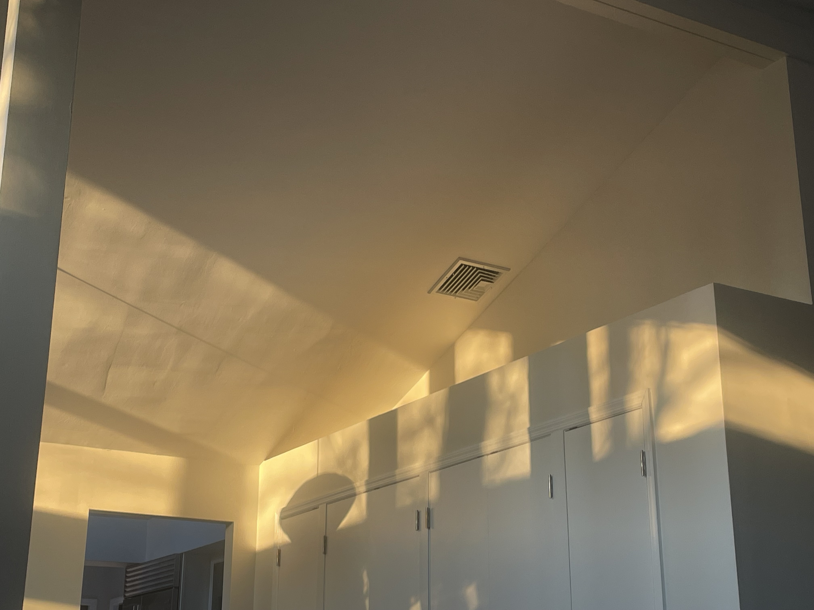

Hot Metal Jasmine
Nov 02 2025

Now that things have settled I think it’s good to be back in darkness. I miss the living room in December afternoons with my brother, eggnog and low lit ghostcurtains. Candlelights skipping and bouncing off large windowpanes and walls and that sloped roof. I miss how dark the house got and how running across the cold cracked kitchen tile felt on my heels. I remember asking hey, we could just sit and we dont need to talk but you can read and play Stardew Valley and i’ll just sit. Those wallfacing silver oak bookshelves felt so tall growing up decorated with pink clay vases and Dad’s book of Japanese pick-up lines and silver wine goblets, wax-filled beercans, the photo albums Mom never finished making, green and blue napkins and tablecloths in the wide brown drawers. White fog by the morning door and backpacks, sinking into dragonweave walls, house-screamed waterworks, imitation crab dinner. That house was so much, the staircases so loud and the November sunsets so bright through those tall windows. Dad always said look at the sunsets over the water and I never did. Would you believe it if you told yourself five years ago, mom and dad are divorced now. Divorced. Maybe you would.
The piano looked so good in autumn, too. Do you think we played the piano together? So many years of lessons and practice I hated and you hated and even Elia hated them too and we probably never all played side by side. I can still feel that towerfall shaped lesion scraped contour on my index fingers and overcooked banana walnut pancakes and whole heavy glass bottles of milk, the flicker fast impertinence of Saturday morning rush, crystallized fearsome sequins on parchment styrofoam. When we all got encapsulated in white smoke quick brown chestnuts and firsttime snow days and the lazy dog beside us. I remember moving in, black inflatable couch and gyros on the peeling red patio. Nicks on the wall, door between bedrooms, would you throw a whole game of Risk on the floor for us again?
Losing the house felt more like the end than divorce did, it felt like those five minutes of handprints on icy glass and sunday crosswords and eggs, black tea, smoothies, cheesy toast, copper round coffee ring, like they were all spent. I like sycamores too, but I’m not going to forget watercaught riverviews and hanging elms and yardcrossed schoolpaths and mirrorglass, black ice, the smell of the heating crawling around the corners of the house like hot metal jasmine air. Mom and I sobbed as we left, praying the new homeowners feel guilty. I’ll see you dry, wrapped up in helium and Minecraft but you’ll miss it too. Thanks for the ride, 196.